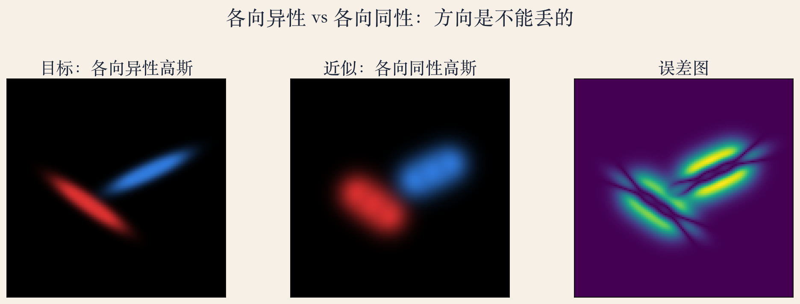
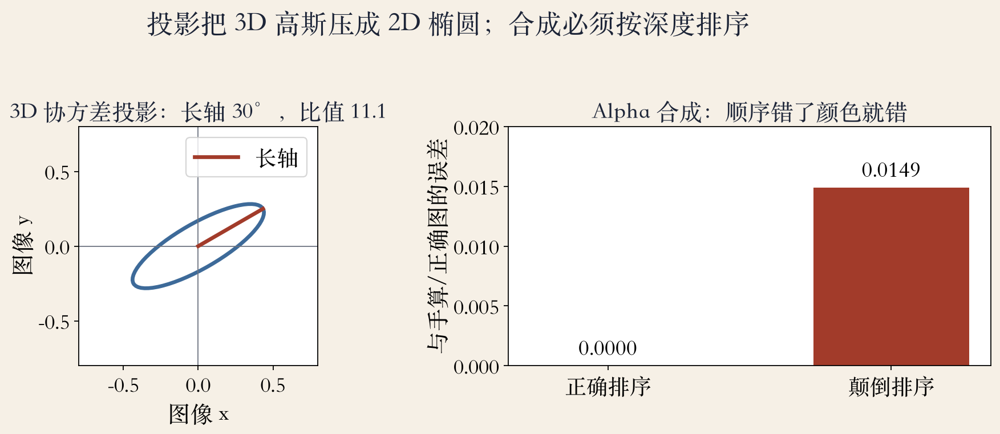
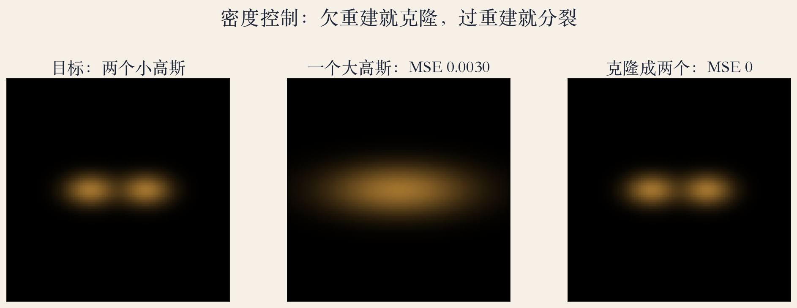

开场 · 教材与论文
NeRF 之外，还有一条路
教材没有 3DGS 正文，只提供 splatting 背景。
3DGS 主体来自 Kerbl 2023 论文。
NeRF 每像素查网络，3DGS 直接投影高斯。
输出是一组可光栅化的高斯参数。
依据：原书第 170/829/908 页；论文第 1 页
两个来源
教材：splatting / surfels / 烘焙
论文：方法、实验与局限
页码分开说，不混用
正课第一百一十七集
01 / 12
表示
每个高斯四个参数
位置、协方差、不透明度、球谐颜色。
协方差 3×3 对称，6 个自由参数。
存缩放向量和四元数，保证半正定。
各向异性椭球能贴住细长结构。
依据：论文第 4 页
四个参数
位置：在哪
协方差：形状与方向
不透明度：挡多少光
球谐：随视角变色
正课第一百一十七集
02 / 12
投影
三维椭球压成二维椭圆
投影公式：Σ′ = J W Σ Wᵀ Jᵀ。
J 是投影变换的雅可比。
实验：长轴 30°、比值 11.1 保持不变。
投影后只保留 2×2 协方差。
依据：论文第 4 页；本集实验
Σ′ = J W Σ Wᵀ Jᵀ
W：观察变换；J：投影雅可比；Σ：三维协方差
正课第一百一十七集
03 / 12
光栅化
16×16 tile，排序后混合
屏幕切成 16×16 的 tile。
99% 置信区间与视锥裁剪。
按深度和 tile 排序，前到后混合。
实验只处理 140/384 个配对，占 36.5%。
依据：论文第 6 页；本集实验
光栅化三步
裁剪：只留相关高斯
排序：深度 + tile
混合：alpha 饱和就停
正课第一百一十七集
04 / 12
实验一 · 各向异性
方向丢了，细条变圆斑
目标：两条各向异性细条。
换成圆斑后，方向信息丢失。
MSE：各向异性 0，各向同性 0.0058。
误差集中在细条边缘和尖端。
依据：本集实验（二维玩具）

各向异性 vs 各向同性：方向丢失的误差｜程序生成，未用教材或论文原图
正课第一百一十七集
05 / 12
密度控制
欠重建克隆，过重建分裂
从 SfM 稀疏点开始，每 100 步调整。
欠重建：克隆小高斯。
过重建：分裂大高斯，尺度除以 1.6。
透明或过大的高斯裁掉。
依据：论文第 5 页
密度控制
判断：视空间位置梯度
阈值：0.0002
克隆增数量，分裂保体积
正课第一百一十七集
06 / 12
实验二 · 投影与排序
顺序错了，颜色就换位
投影保持长轴 30°、比值 11.1。
正确排序：中心像素误差 0。
顺序颠倒：整图 MSE 0.0149。
排序键：深度 + tile 编号。
依据：论文第 6 页；本集实验

3D 投影与深度排序：椭圆和 alpha 误差｜程序生成，未用教材或论文原图
正课第一百一十七集
07 / 12
优化
渲染损失直接反传
损失：L1 + D-SSIM，λ = 0.2。
不透明度用 sigmoid，尺度用 exp。
位置、协方差、球谐、不透明度一起优化。
渲染损失直接反传到每个高斯。
依据：论文第 4/5 页
训练设置
优化器：SGD
实现：自定义 CUDA 核
训练完直接得到高斯集合
正课第一百一十七集
08 / 12
实验三 · 密度控制
一个大高斯盖不住两个目标
一个大高斯盖两个目标，MSE 0.0030。
克隆成两个小高斯，MSE 0。
欠重建处增数量，过重建处分裂。
密度控制在训练中反复进行。
依据：本集实验；论文第 5 页

密度控制：一个大高斯 vs 两个克隆｜程序生成，未用教材或论文原图
正课第一百一十七集
09 / 12
结果
1080p 实时新视角合成
1080p 下达到 30 帧以上。
论文图 1：135 帧和 93 帧。
训练 6 分钟和 51 分钟。
质量对标 Mip-NeRF360。
依据：论文第 1 页
数字的边界
论文的 GPU 与数据集
不是本实验实测
帧率随场景变化
正课第一百一十七集
10 / 12
局限
快，但并非万能
未观测区域出现伪影。
高斯拉长成斑块，大高斯会 popping。
全局排序在切换时是近似的。
书上第 170 页：splatting 有混叠、裂缝、空洞。
依据：论文第 10 页；原书第 170 页
适合与不适合
适合：视角覆盖足够的静态场景
不擅长：无观测区域、复杂反射
不直接输出表面网格
正课第一百一十七集
11 / 12
收束 · 下一集
表示、速度、细节
表示：场景长什么样。
投影与光栅化：怎么画得快。
密度控制：细节够不够。
下一集：评测与基准。
依据：论文第 1/4/5/6/10 页
三条线
NeRF：连续、紧凑
3DGS：显式、快、吃显存
评测：质量 + 帧率 + 显存
正课第一百一十七集
12 / 12